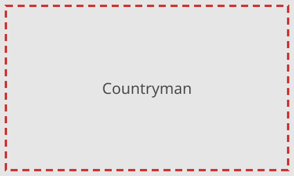
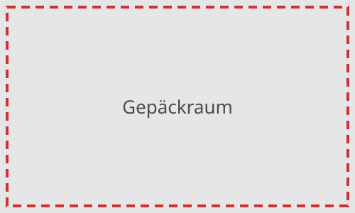
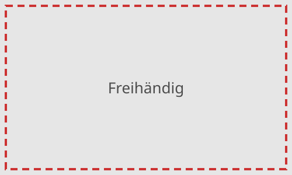
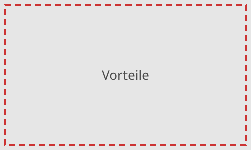
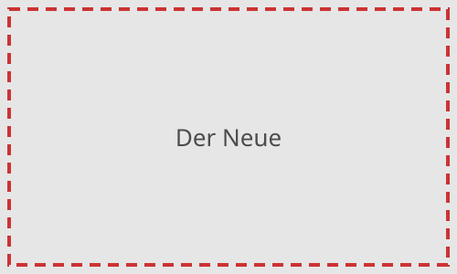
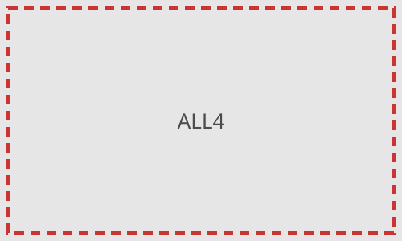

Countryman
Der Countryman ist das grösste Modell der Mini-Familie. Er verbindet den typischen Mini-Look mit viel Platz für Familie, Freizeit und Alltag.

Der Countryman ist das grösste Modell der Mini-Familie. Er verbindet den typischen Mini-Look mit viel Platz für Familie, Freizeit und Alltag.

Der Gepäckraum lässt sich dank umklappbarer Rücksitzbank flexibel erweitern – vom Wocheneinkauf bis zum Feriengepäck findet alles Platz.

Die Heckklappe öffnet sich auf Wunsch berührungslos mit einer Fussbewegung unter dem Heck – praktisch, wenn man die Hände voll hat.


Die neue Generation des Countryman ist gewachsen und bietet modernere Technik, ein aufgeräumtes Cockpit und auch elektrische Antriebe.

ALL4 ist der Allradantrieb von Mini. Er verteilt die Kraft je nach Strassenlage auf alle vier Räder – ideal für Schnee und nasse Strassen.